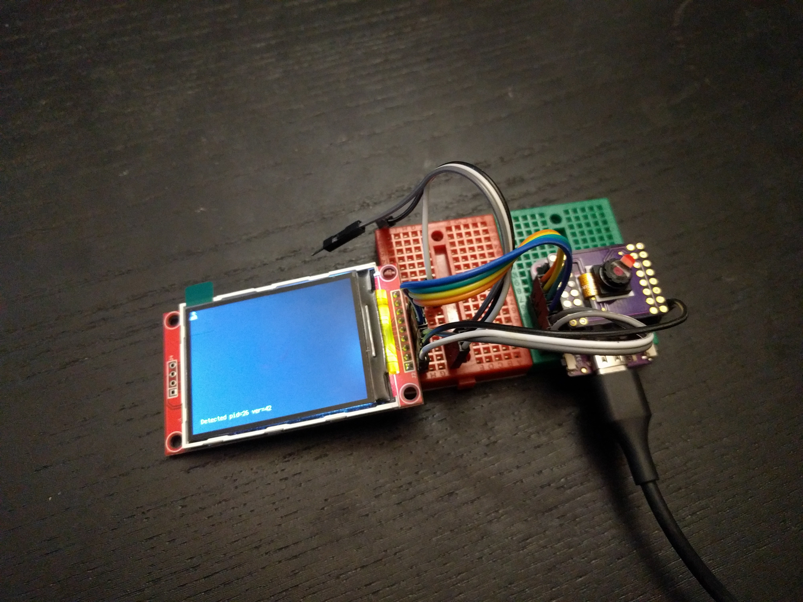

Testing¶
Published on 2021-11-27 in Camera Shield for S2 Mini.
The PCBs finally arrived, but turns out there was a mistake at the fab, and all holes that were supposed to be 0.9mm are 0.6m instead. I managed to solder pin headers to them anyways, so let’s do some testing!
For the test, I decided it would be the easiest to do it with a display. So I wired an ILI9341 to the pins that are not used by the shield, and… it didn’t work. Great, displays were supposed to be a solved problem. After some poking around and testing, it turns out that the silkscreen on the Lolin S2 Mini I have is wrong, and it has pins 12 and 13 swapped. After swapping the pins, it works. Great, so now time to try the test code. Based on Adafruit examples, I came up with this:
import board
import terminalio
import displayio
import adafruit_ili9341
import busio
import adafruit_ov2640
displayio.release_displays()
display_bus = displayio.FourWire(
busio.SPI(clock=board.IO7, MOSI=board.IO5),
command=board.IO9,
chip_select=board.IO12,
reset=board.IO11,
baudrate=80_000_000,
)
display = adafruit_ili9341.ILI9341(display_bus, width=320, height=240)
i2c = busio.I2C(scl=board.IO39, sda=board.IO40)
cam = adafruit_ov2640.OV2640(
i2c,
data_pins=(board.IO21, board.IO17, board.IO16, board.IO18, board.IO33,
board.IO34, board.IO35, board.IO36),
clock=board.IO14,
vsync=board.IO38,
href=board.IO37,
mclk=board.IO13,
mclk_frequency=20_000_000,
size=adafruit_ov2640.OV2640_SIZE_QVGA,
)
cam.flip_x = False
cam.flip_y = True
pid = cam.product_id
ver = cam.product_version
print(f"Detected pid={pid:x} ver={ver:x}")
# cam.test_pattern = True
g = displayio.Group(scale=1)
bitmap = displayio.Bitmap(320, 240, 65536)
tg = displayio.TileGrid(
bitmap,
pixel_shader=displayio.ColorConverter(
input_colorspace=displayio.Colorspace.BGR565_SWAPPED
),
)
g.append(tg)
display.show(g)
display.auto_refresh = False
while True:
cam.capture(bitmap)
bitmap.dirty()
display.refresh(minimum_frames_per_second=0)
cam.deinit()
And… nothing. It seems to hang on the cam.capture(bitmap) line. The good news is that the i2c communication seems to work, as it reports the pid and version correctly. I will need to investigate this further.